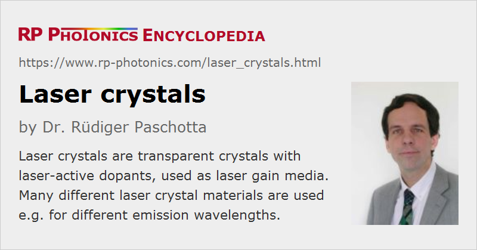

Laser Crystals
Definition: transparent crystals with laser-active dopants, used as laser gain media
More general term: gain media
More specific terms: composite laser crystals, neodymium-doped / ytterbium-doped / erbium-doped / chromium-doped / titanium-doped / thulium-doped / holmium-doped / praseodymium-doped laser crystals
German: Laserkristalle
Categories: optical materials, lasers
How to cite the article; suggest additional literature
Author: Dr. Rüdiger Paschotta
Laser crystals are optical crystals – typically single crystals (monocrystalline optical materials) – which are used as gain media for solid-state lasers. In most cases, they are doped with either trivalent rare earth ions or transition metal ions. These ions enable the crystal to amplify light at the laser wavelength via stimulated emission, when energy is supplied to the crystal via absorption of pump light (→ optical pumping).
Compared with doped glasses, crystals usually have higher transition cross sections, a smaller absorption and emission bandwidth, a higher thermal conductivity, and possibly birefringence. (The article on laser crystals versus glasses discusses the differences in more detail.) In some cases, monocrystalline laser materials may be replaced with ceramic gain media, which have a fine polycrystalline structure.
Common Laser-active Dopants
The most frequently used laser-active rare earth ions and host media together with some typical emission wavelengths are shown in the following table:
Table 1: Common rare earth ions in laser-active crystals.
| Ion | Common host crystals | Important emission wavelengths |
|---|---|---|
| neodymium (Nd3+) | Y3Al5O12 (YAG), YAlO3 (YALO), YVO4 (yttrium vanadate), YLiF4 (YLF), tungstates (KGd(WO4)2, KY(WO4)2) | 1064, 1047, 1053, 1342, 946 nm |
| ytterbium (Yb3+) | YAG, tungstates (e.g. KGW, KYW, KLuW), YVO4, borates (BOYS, GdCOB), apatites (SYS), sesquioxides (Y2O3, Sc2O3) | 1030, 1020–1070 nm |
| erbium (Er3+) | YAG, YLF | 2.9, 1.6 μm |
| thulium (Tm3+) | YAG | 1.9–2.1 μm |
| holmium (Ho3+) | YAG | 2.1, 2.94 μm |
| cerium (Ce3+) | YLF, LiCAF, LiLuF, LiSAF, and similar fluorides | 0.28–0.33 μm |
The following tables lists common transition-metal doped crystals:
Table 2: Common transition metal ions in laser-active crystals.
| Ion | Common host crystals | Important emission wavelengths |
|---|---|---|
| titanium (Ti3+) | sapphire | 650–1100 nm |
| chromium (II) (Cr2+) | zinc chalcogenides such as ZnS, ZnSe, and ZnSxSe1−x | 2–3.4 μm |
| chromium (III) (Cr3+) | Al2O3 (ruby), LiSrAlF6 (LiSAF), LiCaAlF6 (LiCAF), LiSrGaF6 (LiSGAF) | 0.8–0.9 μm |
| chromium (IV) (Cr4+) | YAG, MgSiO4 (forsterite) | 1.35–1.65 μm (YAG), 1.1–1.37 μm (forsterite) |
These tables contain only the most common host crystals; many others exist, which are less frequently used.
Important Properties of Host Crystals
The host crystal is much more than just a means to fix the laser-active ions at certain positions in space. A number of properties of the host material are important:
- The medium should have a high transparency (low absorption and scattering) in the wavelength regions of pump and laser radiation, and good optical homogeneity. To some extent, this depends on the quality of the material, determined by details of the fabrication process.
- The host medium influences strongly the wavelength, bandwidth and transition cross sections of pump and laser transitions and also the upper-state lifetime. For example, Nd:YVO4 has much higher cross sections, a larger gain bandwidth, and a smaller upper-state lifetime than Nd:YAG. Other neodymium hosts provide other transition wavelengths, e.g. 1047 or 1053 nm from Nd:YLF.
- Non-radiative transitions (e.g. multi-phonon transitions) are also strongly influenced by the host, in particular by its maximum phonon energy. Some of these transitions are very detrimental, leading to quenching of the upper-state population (thus lowering the quantum efficiency). Others are essential for laser operation, e.g. for removing ions from the lower laser level. Energy transfer processes are also dependent on the host material.
- The maximum possible doping concentration can depend strongly on the host material and its fabrication method.
- Different crystalline materials are very different concerning their hardness and other properties, which determine with which methods and how easily they can be cut and polished with good quality.
- Some materials are chemically not stable, e.g. hygroscopic.
- Particularly for high-power lasers (but often enough also for medium and low powers), a high thermal conductivity low thermo-optic coefficients (for weak thermal lensing) and a high resistance to mechanical stress are desirable.
- Optical isotropy can be beneficial, but in other cases birefringence (reducing thermal depolarization) and possibly polarization-dependent gain is preferable (see also: polarization of light).
- A high damage threshold in terms of pulse fluence or peak intensity can be important for high-energy amplifiers.
It is apparent that different applications lead to very different requirements on laser gain media. For this reason, a broad range of different crystals are used, and making the right choice is essential for constructing lasers with optimum performance.
Common Crystalline Laser Host Media
There is a wide range of crystalline media, which can be grouped according to important atomic constituents and crystalline structures. Some important groups of crystals are:
- garnets such as Y3Al5O12 (YAG), Gd3Ga5O12 (GGG), and Gd3Sc2Al3O12 (GSGG): hard and chemically inert materials, optical isotropic, with high thermal conductivity
- sapphire (Al2O3) (e.g. for titanium–sapphire lasers) and aluminates such as YAlO3 (YALO, YAP) for neodymium doping: high hardness and thermal conductivity, anisotropic
- sesquioxides such as Y2O3, Sc2O3: isotropic, high hardness and thermal conductivity
- vanadates such as YVO4 and GdVO4: very high laser cross sections of Nd3+, anisotropic
- fluorides, e.g. YLiF4 (YLF): good UV transparency, birefringence, large energy storage capability of Nd:YLF; also LiCAF, LiLuF, LiSAF as chromium-doped broadband gain media
- silicates, e.g. MgSiO4 (forsterite): broad gain bandwidth
- monoclinic double tungstates such as KGd(WO4)2 (KGW) and KY(WO4)2 (KYW): combination of relatively high Yb3+ laser cross sections, large gain bandwidth, and high thermal conductivity
- disordered tetragonal double tungstates such as NaGd(WO4)2 (NGW) and NaY(WO4)2 (NYW): particularly large gain bandwidth of ytterbium
- chalcogenides such as ZnS or ZnSe for mid-infrared lasers
Laser Crystals with Integrated Saturable Absorber
A few laser crystal materials have been demonstrated where some saturable absorber material is incorporated for passive Q switching of a laser. For example, Cr4+ ions can be incorporated into such Nd-doped crystals for emission in the 1-μm spectral region. This has been tried with Cr:Nd:YAG and Cr:Nd:YVO4, for example.
With that concept, one does not need an additional saturable absorber crystal, so that one may make more compact Q-switched laser setups with lower internal parasitic losses. However, unwanted side effects may also occur, such as obtaining unwanted valence states of the involved ions or energy transfers. In addition, some flexibility is lost in experiments if one cannot try out absorbers with different thickness or doping concentration, for example, without exchanging the laser crystal itself.
Geometries of Laser Crystals
Different geometric forms can be used in lasers:
- A common form is that of a cuboid. The crystal can be, e.g., a thin coplanar plate, with transverse dimensions (perpendicular to the laser beam) and a thickness of a few millimeters. It may be oriented for near perpendicular incidence of the laser beam, or at Brewster's angle. It can be fixed in some solid mount which also acts as a heat sink. Larger crystals are usually used for side pumping e.g. with high-power diode bars.
- In some cases, extreme angles between the end faces are required, e.g. if one end face has to be Brewster-angled while the other one is made for perpendicular incidence.
- Slab lasers are based on relatively flat slabs, which may or may not be of cuboid form.
- Many side-pumped lasers use relatively long cylindrical laser rods, e.g. made of Nd:YAG. Particularly for lamp-pumped lasers, the rod length can be several centimeters, whereas the rod diameter is much smaller (a few millimeters).
- Thin-disk lasers require a disk, often with circular cross section, having a thickness of only e.g. 100–200 μm and a relatively high doping concentration.
- Special geometries are required for monolithic solid-state lasers, such as nonplanar ring oscillators.
- For various reasons, composite crystals are becoming popular. These have a spatially varying chemical composition and can be made with special shapes.
- There are so-called single-crystal fibers, where a monocrystalline material (often containing a laser-active dopant) is pulled into the form of a fiber. Here, a waveguide effect is obtained from the crystal–air interface, possibly also from thermal lensing, doping gradients or other effects.
Bulk Properties
For a given dopant and host medium, the doping concentration is the most important parameter. Other issues of interest are the uniformity of doping (influencing the tendency for quenching), the level of impurities (e.g. unwanted other rare earth ions), and the optical homogeneities. Several of these factors influence the absorption and scattering losses of the material, and/or the strength of thermal lensing.
Of course, it is very desirable that a given crystal quality is produced consistently, although different laser designs can have a different sensitivity to material parameters.
Optimization of Geometry and Parameters
Which geometry, dopant and doping concentration of the gain medium are most advantageous depend on several factors. The available pump source (type of laser diode or lamp) and the envisaged pumping arrangement are important factors, but the material itself also has some influence. For example, titanium–sapphire lasers have to be pumped with high intensities, for which the form of a transversely cooled rod, operated with relatively small pump and laser beam diameter, is more appropriate than e.g. a thin disk. As another example, Q-switched lasers reach a higher population density in the upper laser level and are therefore more sensitive to quenching effects and energy transfer processes; therefore, a lower doping density is often appropriate for these devices. For high-power lasers, lower doping densities are often used in order to limit the density of heat generation, although thin-disk lasers work best with highly doped crystals. Many laser products do not reach the full performance potential because such details have not been properly worked out.
Optical Surfaces
Those surfaces which are passed by the laser beam are normally either oriented at Brewster's angle or have an anti-reflection coating. Even AR-coated crystals are often slightly tilted against the beam so as to prevent back-reflections staying in the laser resonator. This is important for, e.g., mode-locked lasers and tunable single-frequency lasers.
A high surface quality is of course important. Specifications of surface flatness are often better than λ / 10. This helps to avoid both scattering losses and wavefront distortions which can degrade the laser's beam quality. In addition, scratch and dig specifications (cosmetic surface quality) limit the density of small-scale surface defects; they may read e.g. “80–50” for medium quality mass production, or “10–5” for particularly demanding laser applications. Proper surface treatment also influences the damage threshold, which is important e.g. for high-energy pulse amplifiers. Finally, a high degree of end face parallelism can be important for avoiding changes of beam direction in a crystal.
Suppliers
The RP Photonics Buyer's Guide contains 78 suppliers for laser crystals. Among them:
Questions and Comments from Users
Here you can submit questions and comments. As far as they get accepted by the author, they will appear above this paragraph together with the author’s answer. The author will decide on acceptance based on certain criteria. Essentially, the issue must be of sufficiently broad interest.
Please do not enter personal data here; we would otherwise delete it soon. (See also our privacy declaration.) If you wish to receive personal feedback or consultancy from the author, please contact him e.g. via e-mail.
By submitting the information, you give your consent to the potential publication of your inputs on our website according to our rules. (If you later retract your consent, we will delete those inputs.) As your inputs are first reviewed by the author, they may be published with some delay.
Bibliography
| [1] | A. A. Kaminskii, “Laser crystals and ceramics: recent advances”, Laser Photon. Rev. 1 (2), 93 (2007), doi:10.1002/lpor.200710008 |
| [2] | A. A. Kaminskii, Laser Crystals, Springer, New York (1981) |
| [3] | R. C. Powell, Physics of Solid-State Laser Materials, AIP Press, Springer (1998) |
| [4] | W. Koechner, Solid-State Laser Engineering, 6th edn., Springer, Berlin (2006) |
| [5] | F. Träger (ed.), Handbook of Lasers and Optics, Springer, Berlin (2007) |
See also: gain media, laser crystals versus glasses, doped insulator lasers, optical crystals, rare-earth-doped gain media, transition-metal-doped gain media, rod lasers, slab lasers, thin-disk lasers, single-crystal fibers, The Photonics Spotlight 2007-02-09
and other articles in the categories optical materials, lasers

This encyclopedia is authored by Dr. Rüdiger Paschotta, the founder and executive of RP Photonics Consulting GmbH. How about a tailored training course from this distinguished expert at your location? Contact RP Photonics to find out how his technical consulting services (e.g. product designs, problem solving, independent evaluations, training) and software could become very valuable for your business!
|  |
If you like this page, please share the link with your friends and colleagues, e.g. via social media:
These sharing buttons are implemented in a privacy-friendly way!